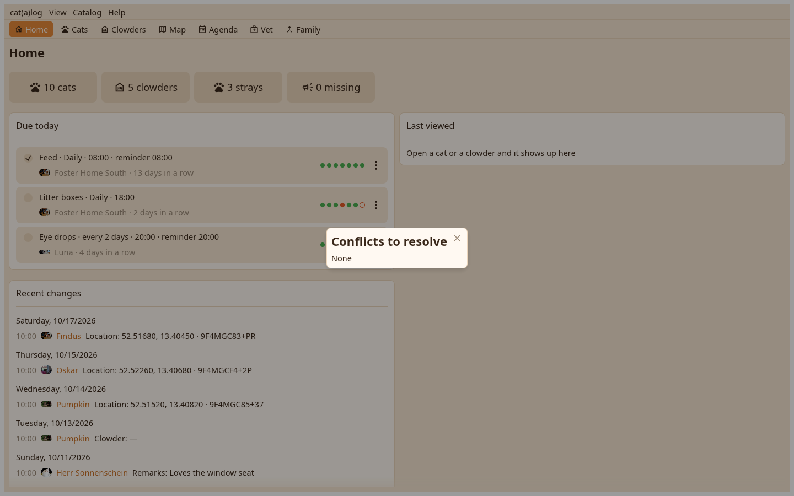

The desk settles a conflict on its row, merges two records with the survivor chosen by you, and transfers a cat or a home to another catalog on the same machine.

Both values with who and when; a click keeps one. The window stays open with the conflicts still to settle. Catalog menu, or the arrival window after a sync.
Find duplicates lists pairs by ID or by name and details. Merge this into… on a page's Actions menu or a card's menu asks for the survivor and says what moves; a moment is recorded first.
Move to another catalog on a card, a page or the marked rows: pick the catalog, and the cats, or the home with its cats, move over, re-stamped under the destination.